Infering latent ordering from the pancrea dataset
Ziang Zhang
2025-06-23
Last updated: 2025-07-08
Checks: 7 0
Knit directory: InferOrder/
This reproducible R Markdown analysis was created with workflowr (version 1.7.1). The Checks tab describes the reproducibility checks that were applied when the results were created. The Past versions tab lists the development history.
Great! Since the R Markdown file has been committed to the Git repository, you know the exact version of the code that produced these results.
Great job! The global environment was empty. Objects defined in the global environment can affect the analysis in your R Markdown file in unknown ways. For reproduciblity it’s best to always run the code in an empty environment.
The command set.seed(20250707) was run prior to running
the code in the R Markdown file. Setting a seed ensures that any results
that rely on randomness, e.g. subsampling or permutations, are
reproducible.
Great job! Recording the operating system, R version, and package versions is critical for reproducibility.
Nice! There were no cached chunks for this analysis, so you can be confident that you successfully produced the results during this run.
Great job! Using relative paths to the files within your workflowr project makes it easier to run your code on other machines.
Great! You are using Git for version control. Tracking code development and connecting the code version to the results is critical for reproducibility.
The results in this page were generated with repository version 27f1ee5. See the Past versions tab to see a history of the changes made to the R Markdown and HTML files.
Note that you need to be careful to ensure that all relevant files for
the analysis have been committed to Git prior to generating the results
(you can use wflow_publish or
wflow_git_commit). workflowr only checks the R Markdown
file, but you know if there are other scripts or data files that it
depends on. Below is the status of the Git repository when the results
were generated:
Ignored files:
Ignored: .DS_Store
Ignored: .Rhistory
Ignored: .Rproj.user/
Ignored: analysis/.DS_Store
Untracked files:
Untracked: code/general_EM.R
Untracked: code/linear_EM.R
Untracked: code/ordering_loading.R
Untracked: code/plot_ordering.R
Untracked: code/prior_precision.R
Untracked: code/simulate.R
Untracked: data/loading_order/
Unstaged changes:
Modified: analysis/_site.yml
Modified: analysis/index.Rmd
Note that any generated files, e.g. HTML, png, CSS, etc., are not included in this status report because it is ok for generated content to have uncommitted changes.
These are the previous versions of the repository in which changes were
made to the R Markdown (analysis/explore_pancrea.rmd) and
HTML (docs/explore_pancrea.html) files. If you’ve
configured a remote Git repository (see ?wflow_git_remote),
click on the hyperlinks in the table below to view the files as they
were in that past version.
| File | Version | Author | Date | Message |
|---|---|---|---|---|
| Rmd | 27f1ee5 | Ziang Zhang | 2025-07-08 | workflowr::wflow_publish("analysis/explore_pancrea.rmd") |
Ordering structure plot
Given a set of loadings, we want to infer a latent ordering, that will produce a smooth structure plot.
Data
In this study, we will consider the pancrea dataset studied in here.
For simplicity, we will use the loadings from the semi-NMF, considering only the factors that are most relevant to the cell types, and only a subset of cells with a specific batch type (inDrop3).
library(tibble)
library(tidyr)
library(ggplot2)Warning: package 'ggplot2' was built under R version 4.3.3library(Rtsne)
library(umap)
set.seed(1)
source("./code/plot_ordering.R")
load("./data/loading_order/pancreas_factors.rdata")
load("./data/loading_order/pancreas.rdata")
cells <- subsample_cell_types(sample_info$celltype,n = 500)
Loadings <- fl_snmf_ldf$L[cells,c(3,8,9,12,17,18,20,21)]
celltype <- as.character(sample_info$celltype[cells])
names(celltype) <- rownames(Loadings)
batchtype <- as.character(sample_info$tech[cells])
names(batchtype) <- rownames(Loadings)# Let's further restrict cells to only contain cells from one type of batch
Loadings <- Loadings[batchtype == "inDrop3",]
celltype <- celltype[batchtype == "inDrop3"]
batchtype <- batchtype[batchtype == "inDrop3"]Let’s start with an un-ordered structure plot.
plot_structure(Loadings)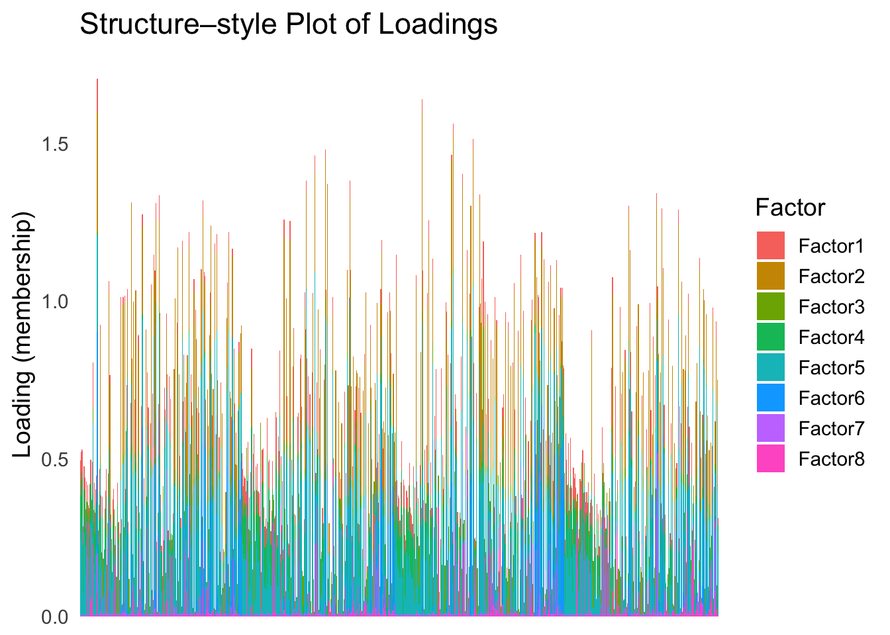
First PC
Now, let’s see how does the result look like when we order the structure plot by the first PC.
PC1 <- prcomp(Loadings,center = TRUE, scale. = FALSE)$x[,1]
PC1_order <- order(PC1)
plot_structure(Loadings, order = rownames(Loadings)[PC1_order])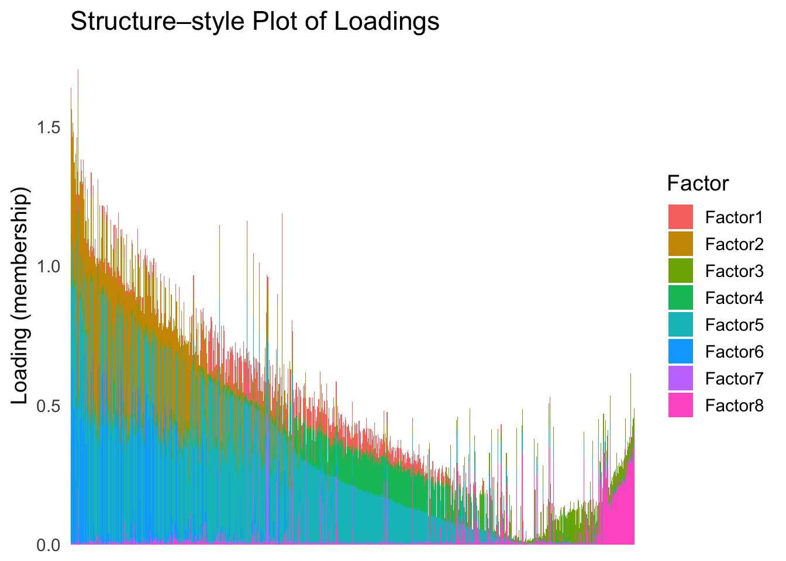
Take a look at the ordering metric versus the cell types.
highlights <- c("acinar","ductal","delta","gamma", "macrophage", "endothelial")
PC1 <- prcomp(Loadings,center = TRUE, scale. = FALSE)$x[,1]
plot_highlight_types(type_vec = celltype,
subset_types = highlights,
ordering_metric = PC1,
other_color = "white"
)Warning: `position_stack()` requires non-overlapping x intervals.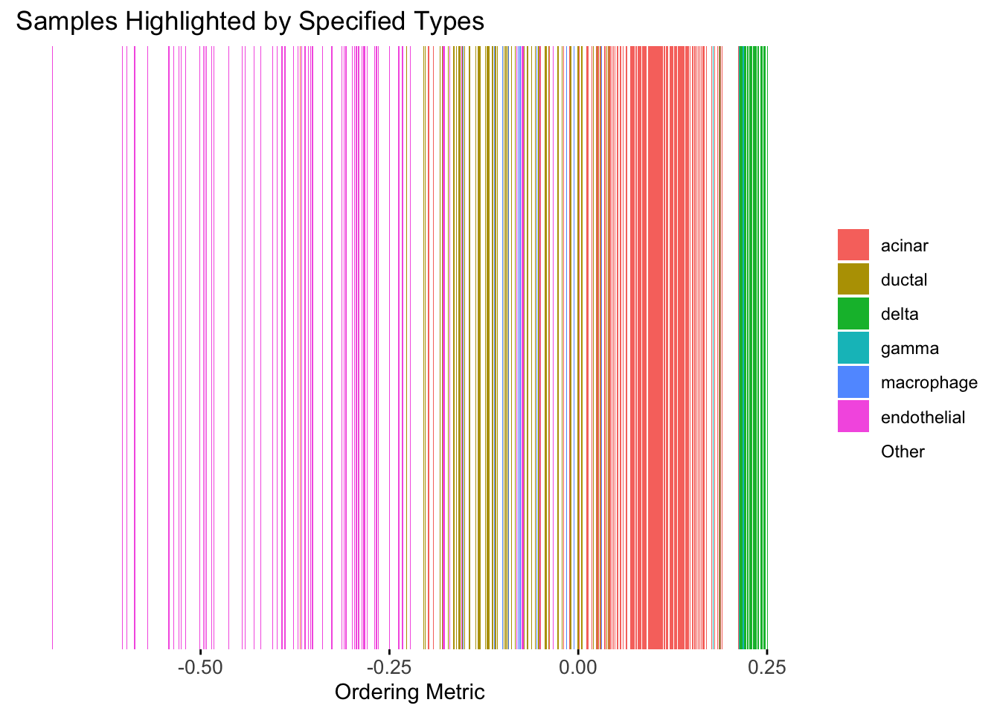
Here the x-axis represents the latent ordering of each cell, and the color represents its cell type. Based on this figure, it appears the first PC distinguishes between (delta, gamma) and (acinar, ductal). However, the ordering could not tell the difference between delta and gamma. Also, the ordering could not distinguish the macrophage from other cell types.
We could also take a look at the distribution of the latent ordering metric for each cell type.
distribution_highlight_types(
type_vec = celltype,
subset_types = highlights,
ordering_metric = PC1,
density = FALSE
)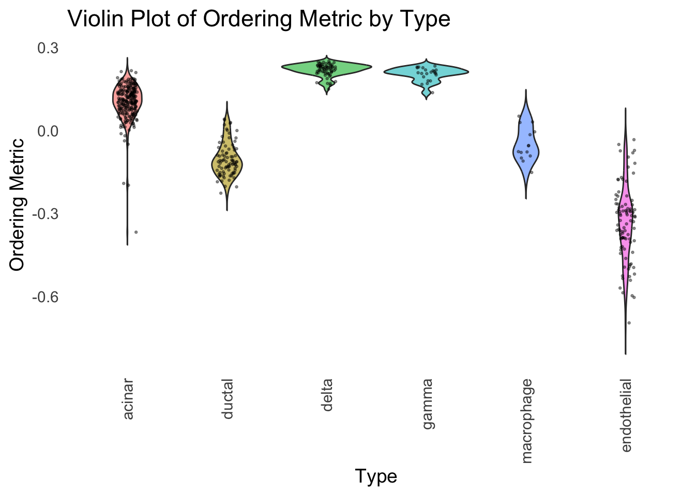
The ordering just based on the first PC seems to be not bad. Further since the PC has a probabilistic interpretation, the ordering can also be interpreted probabilistically.
tSNE
Just as a comparison, let’s see how does the result look like when we order the structure plot by the first tSNE.
set.seed(1)
tsne <- Rtsne(Loadings, dims = 1, perplexity = 30, verbose = TRUE, check_duplicates = FALSE)Performing PCA
Read the 865 x 8 data matrix successfully!
Using no_dims = 1, perplexity = 30.000000, and theta = 0.500000
Computing input similarities...
Building tree...
Done in 0.03 seconds (sparsity = 0.125422)!
Learning embedding...
Iteration 50: error is 61.378493 (50 iterations in 0.03 seconds)
Iteration 100: error is 53.621893 (50 iterations in 0.03 seconds)
Iteration 150: error is 51.570417 (50 iterations in 0.03 seconds)
Iteration 200: error is 50.534836 (50 iterations in 0.03 seconds)
Iteration 250: error is 49.880683 (50 iterations in 0.03 seconds)
Iteration 300: error is 0.892290 (50 iterations in 0.03 seconds)
Iteration 350: error is 0.620483 (50 iterations in 0.03 seconds)
Iteration 400: error is 0.536455 (50 iterations in 0.03 seconds)
Iteration 450: error is 0.508706 (50 iterations in 0.03 seconds)
Iteration 500: error is 0.487135 (50 iterations in 0.03 seconds)
Iteration 550: error is 0.475625 (50 iterations in 0.03 seconds)
Iteration 600: error is 0.463845 (50 iterations in 0.03 seconds)
Iteration 650: error is 0.453710 (50 iterations in 0.03 seconds)
Iteration 700: error is 0.446554 (50 iterations in 0.03 seconds)
Iteration 750: error is 0.439321 (50 iterations in 0.03 seconds)
Iteration 800: error is 0.434766 (50 iterations in 0.03 seconds)
Iteration 850: error is 0.428145 (50 iterations in 0.03 seconds)
Iteration 900: error is 0.424017 (50 iterations in 0.03 seconds)
Iteration 950: error is 0.420721 (50 iterations in 0.03 seconds)
Iteration 1000: error is 0.417580 (50 iterations in 0.03 seconds)
Fitting performed in 0.61 seconds.tsne_metric <- tsne$Y[,1]
tsne_order <- order(tsne_metric)
names(tsne_metric) <- rownames(Loadings)plot_structure(Loadings, order = rownames(Loadings)[tsne_order])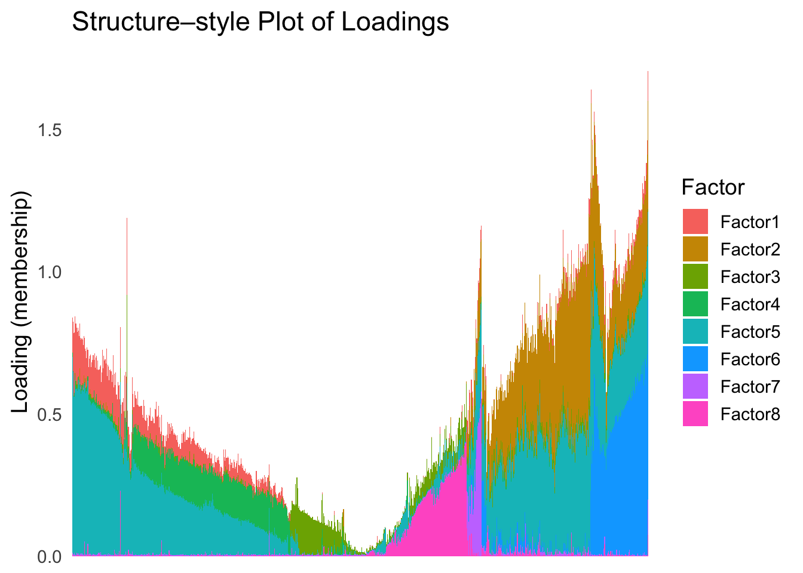
Just based on the structure plot, it seems like the ordering is producing more structured results than the first PC.
plot_highlight_types(type_vec = celltype,
subset_types = highlights,
ordering_metric = tsne_metric,
other_color = "white"
)Warning: `position_stack()` requires non-overlapping x intervals.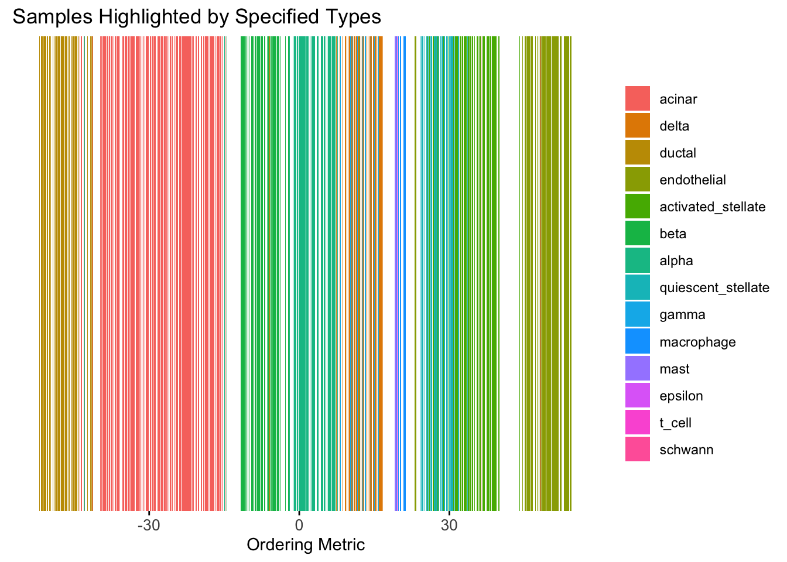
distribution_highlight_types(
type_vec = celltype,
subset_types = highlights,
ordering_metric = tsne_metric,
density = FALSE
)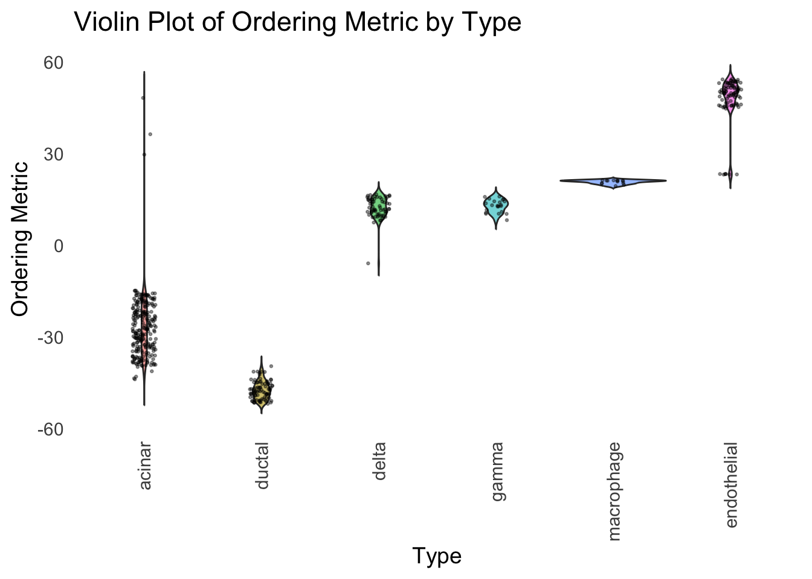
Although the tSNE ordering does not have a clear probabilistic interpretation, the structure produced by this ordering matches the cell types much better than the first PC ordering. The distribution of the ordering metric also shows a clear compact separation between the cell types, which is not the case for the first PC. In particular, the macrophage and endothelial cells are now clearly separated from the other cell types.
However, tSNE’s metric only preserves the local structure of the data, and there is no guarantee that the global distance between the points is preserved in the tSNE metric (e.g. the distance between two groups).
UMAP
Let’s see how does the result look like when we order the structure plot by the first UMAP.
umap_result <- umap(Loadings, n_neighbors = 15, min_dist = 0.1, metric = "euclidean")
umap_metric <- umap_result$layout[,1]
names(umap_metric) <- rownames(Loadings)
umap_order <- order(umap_metric)
names(umap_metric) <- rownames(Loadings)plot_structure(Loadings, order = rownames(Loadings)[umap_order])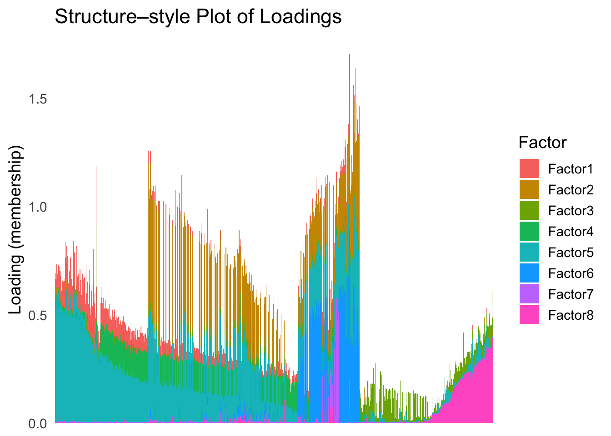
plot_highlight_types(type_vec = celltype,
subset_types = highlights,
ordering_metric = umap_metric,
other_color = "white"
)Warning: `position_stack()` requires non-overlapping x intervals.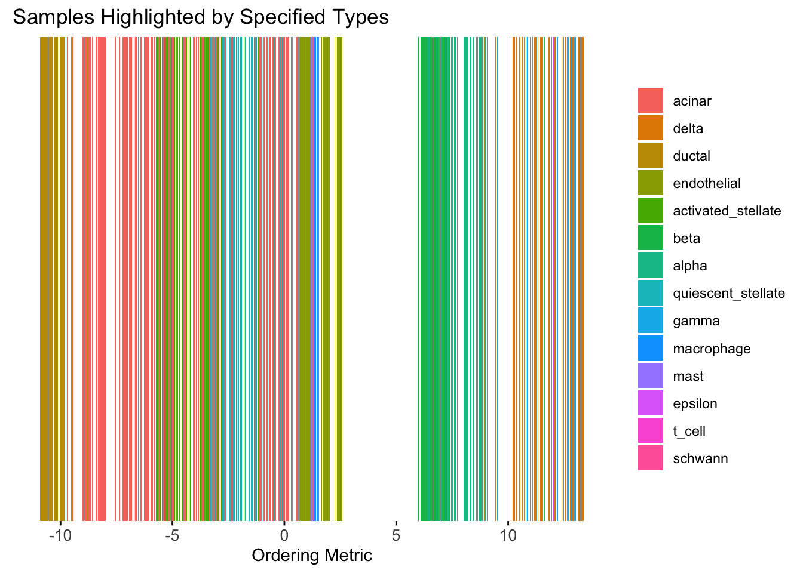
distribution_highlight_types(
type_vec = celltype,
subset_types = highlights,
ordering_metric = umap_metric,
density = FALSE
)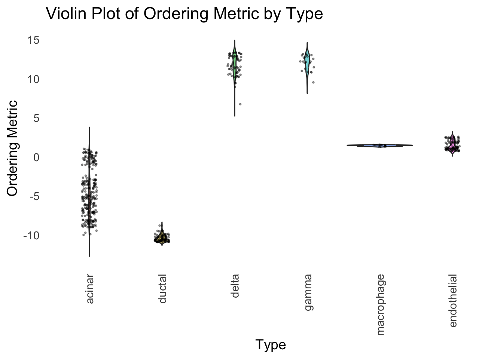
UMAP can also provide very clear separation between the cell types. However, just like tSNE, it does not have a clear probabilistic interpretation. Furthermore, the global ordering structure from UMAP seems to conflict with the global ordering structure from the tSNE. In the tSNE ordering, acinar is next to delta, which is next to endothelial, where as in the UMAP ordering, acinar is next to endothelial, which is next to delta.
The separation of macrophage is not as clear as in the tSNE ordering.
Hierarchical Clustering
Next, let’s try doing hierarchical clustering on the loadings and see how does the result look like when we order the structure plot by the hierarchical clustering.
First, let’s try when method = single.
hc <- hclust(dist(Loadings), method = "single")
hc_order <- hc$order
names(hc_order) <- rownames(Loadings)plot_structure(Loadings, order = rownames(Loadings)[hc_order])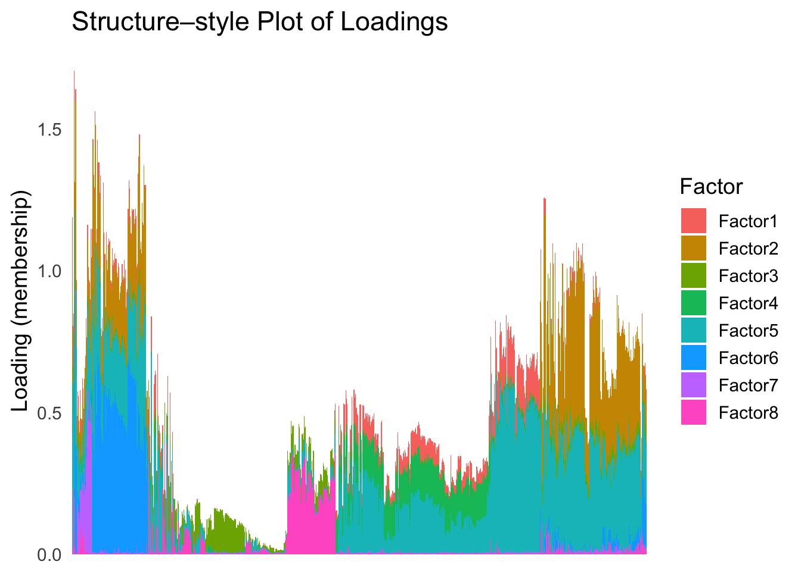
plot_highlight_types(type_vec = celltype,
subset_types = highlights,
order_vec = rownames(Loadings)[hc_order],
other_color = "white"
)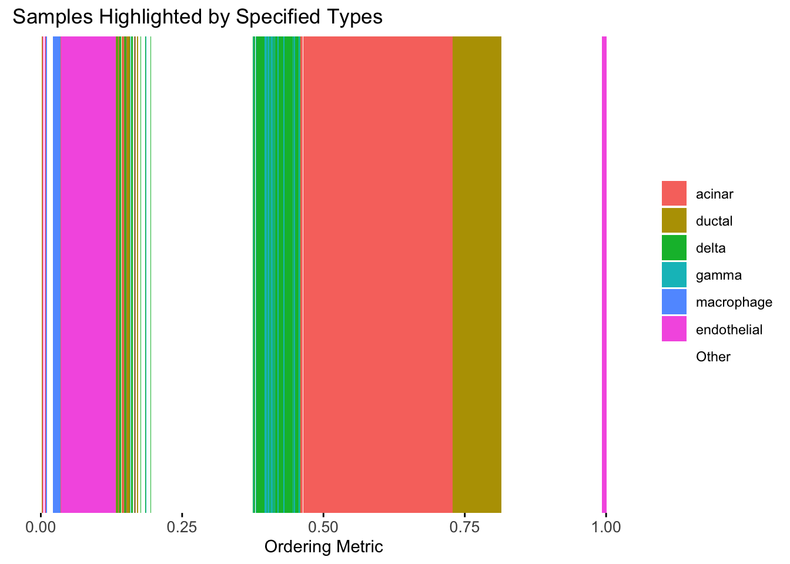
distribution_highlight_types(
type_vec = celltype,
subset_types = highlights,
order_vec = rownames(Loadings)[hc_order],
density = FALSE
)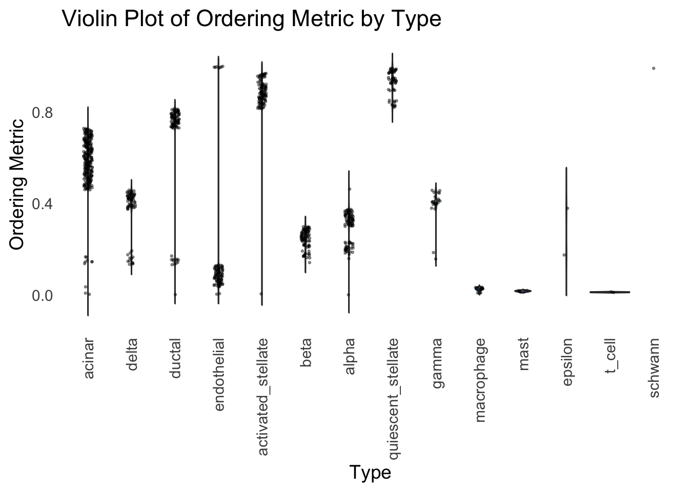
Similar to t-SNE, the hierarchical clustering ordering also produces a clear separation between the cell types.
Then, let’s try when method = ward.D2.
hc <- hclust(dist(Loadings), method = "ward.D2")
hc_order <- hc$order
names(hc_order) <- rownames(Loadings)plot_structure(Loadings, order = rownames(Loadings)[hc_order])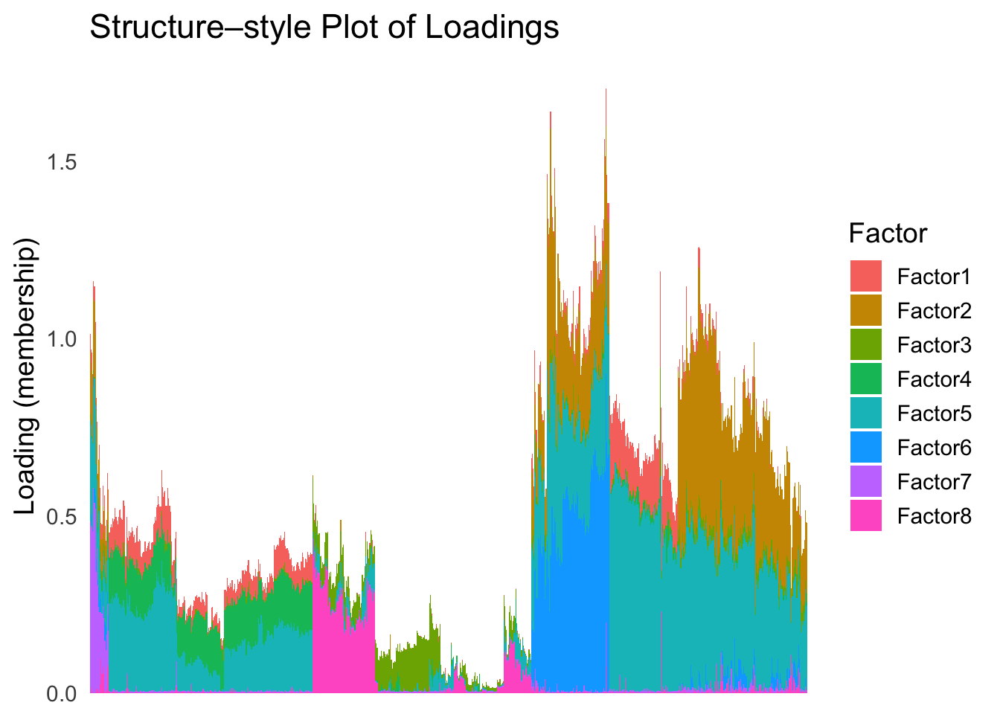
plot_highlight_types(type_vec = celltype,
subset_types = highlights,
order_vec = rownames(Loadings)[hc_order],
other_color = "white"
)
distribution_highlight_types(
type_vec = celltype,
subset_types = highlights,
order_vec = rownames(Loadings)[hc_order],
density = FALSE
)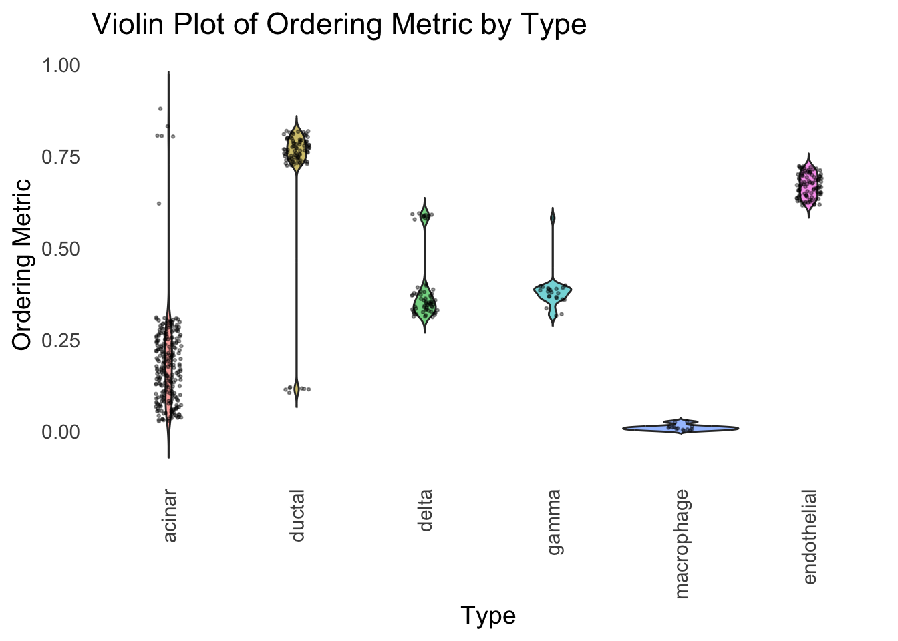
Again, the hierarchical clustering ordering produces a clear separation between the cell types.
However, just like tSNE and UMAP, the hierarchical clustering ordering does not necessarily produce a interpretable global ordering structure. In particular, the ordering is not unique, as clades of the tree can be rearranged without changing the clustering result.
sessionInfo()R version 4.3.1 (2023-06-16)
Platform: aarch64-apple-darwin20 (64-bit)
Running under: macOS Monterey 12.7.4
Matrix products: default
BLAS: /Library/Frameworks/R.framework/Versions/4.3-arm64/Resources/lib/libRblas.0.dylib
LAPACK: /Library/Frameworks/R.framework/Versions/4.3-arm64/Resources/lib/libRlapack.dylib; LAPACK version 3.11.0
locale:
[1] en_US.UTF-8/en_US.UTF-8/en_US.UTF-8/C/en_US.UTF-8/en_US.UTF-8
time zone: America/Chicago
tzcode source: internal
attached base packages:
[1] stats graphics grDevices utils datasets methods base
other attached packages:
[1] umap_0.2.10.0 Rtsne_0.17 ggplot2_3.5.2 tidyr_1.3.1
[5] tibble_3.2.1 workflowr_1.7.1
loaded via a namespace (and not attached):
[1] sass_0.4.10 generics_0.1.4 stringi_1.8.7 lattice_0.22-6
[5] digest_0.6.37 magrittr_2.0.3 evaluate_1.0.3 grid_4.3.1
[9] RColorBrewer_1.1-3 fastmap_1.2.0 rprojroot_2.0.4 jsonlite_2.0.0
[13] Matrix_1.6-4 processx_3.8.6 whisker_0.4.1 RSpectra_0.16-2
[17] ps_1.9.1 promises_1.3.3 httr_1.4.7 purrr_1.0.4
[21] scales_1.4.0 jquerylib_0.1.4 cli_3.6.5 rlang_1.1.6
[25] withr_3.0.2 cachem_1.1.0 yaml_2.3.10 tools_4.3.1
[29] dplyr_1.1.4 httpuv_1.6.16 reticulate_1.42.0 png_0.1-8
[33] vctrs_0.6.5 R6_2.6.1 lifecycle_1.0.4 git2r_0.33.0
[37] stringr_1.5.1 fs_1.6.6 pkgconfig_2.0.3 callr_3.7.6
[41] pillar_1.10.2 bslib_0.9.0 later_1.4.2 gtable_0.3.6
[45] glue_1.8.0 Rcpp_1.0.14 xfun_0.52 tidyselect_1.2.1
[49] rstudioapi_0.16.0 knitr_1.50 farver_2.1.2 htmltools_0.5.8.1
[53] labeling_0.4.3 rmarkdown_2.28 compiler_4.3.1 getPass_0.2-4
[57] askpass_1.2.1 openssl_2.2.2